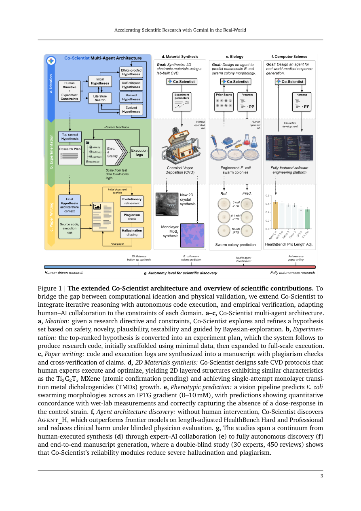

#1
★ 9/10
Accelerating Scientific Research with Gemini in the Real-World
用Gemini加速真实世界的科学研究

图 Figure · Page 3 of paper
🎯 Gemini多智能体系统在真实实验室中自主完成跨学科科研全流程
A Gemini-powered AI system autonomously conducts real lab experiments across materials science, biology, and computer science.
🗣️ 一句话比喻 · Plain-English Analogy就像雇了一个超级聪明又不知疲倦的实验室助理——它能读遍所有教科书，自己设计实验方案，走到仪器前操作，读懂结果，再把论文写好交给你，而这一切都发生在你睡觉的时候。Think of it like hiring an incredibly smart, tireless lab assistant who can read every textbook ever written, design the experiment, walk over to the lab equipment, run the test, read the results, and write up the paper — all while you sleep.
| 维度 | 中文 | English |
|---|---|---|
| ❓ 待解决 的问题 |
科学研究的速度极慢——科学家们往往要花费数年设计实验、执行测试、撰写论文，而且经常走弯路。现有的AI工具只能出主意，却无法真正动手做实验或验证想法是否有效。这意味着AI只能当"参谋"，而不能成为真正的"研究伙伴"。 | Scientific research is painfully slow — scientists spend years designing experiments, running tests, and writing papers, often hitting dead ends. Existing AI tools can brainstorm ideas, but they can't actually run experiments or check if their ideas work in the real world. This gap means AI stays a passive advisor rather than an active research partner. |
| 💡 解决 的亮点 |
• 首次在真实实验室中实现"闭环AI科学家"：不只是出主意，还能设计、执行、验证实验。 • 同一套系统跨越材料科学、生物学、计算机科学三个截然不同的领域。 • 内置"可靠性模块"，能在结果产生前主动过滤幻觉、抄袭和不安全建议。 | • First real-world demo of a closed-loop AI scientist: it doesn't just suggest ideas — it designs, executes, and validates experiments in actual labs. • Works across three very different fields (chemistry, biology, CS) using the same system. • Includes built-in "reliability modules" that catch hallucinations, plagiarism, and unsafe suggestions before they cause harm. |
| 🧪 实验 内容 |
团队在三个真实领域对Co-Scientist进行了测试：(1) 材料科学——用半自动化学气相沉积反应器为2D半导体（MXene、MoS2、MoSe2、WS2）设计合成方案；(2) 生物学——从稀疏图像数据预测基因工程大肠杆菌在不同化学诱导物浓度下的群游行为，并与未发表的湿实验数据对比；(3) 计算机科学——自主发明新的AI推理架构，在HealthBench医疗基准上与六个前沿模型竞争。最后，30位领域专家对AI生成的研究论文进行了450次盲审评估。 | The team tested Co-Scientist in three real-world domains: (1) Materials science — it designed synthesis recipes for 2D semiconductors (MXenes, MoS2, MoSe2, WS2) using a semi-automated chemical reactor; (2) Biology — it predicted how engineered bacteria (E. coli) would swarm under different chemical conditions, compared against unpublished wet-lab data; (3) Computer science — it autonomously invented a new AI architecture and tested it on the HealthBench medical benchmark against six frontier models. Finally, 30 domain experts performed 450 blind reviews of AI-generated research papers to evaluate quality, hallucination, and safety. |
| 📊 实验 结果 |
材料科学方面，Co-Scientist一次性成功合成了单层MoS2、MoSe2和WS2半导体——即便对有经验的化学家来说也极具挑战，同时生成了与Ti3C2Tx MXene晶格具有关键结构相似性的层状2D材料。计算机科学方面，AI自主发明的推理架构在HealthBench Hard和HealthBench Professional两个医疗基准上超越了全部六个前沿模型，同时在盲测医生评估中降低了临床潜在伤害。生物学方面，细菌群游预测与未发表的湿实验测量结果定量吻合。450次专家盲审确认，可靠性模块显著降低了生成论文中的幻觉和抄袭现象。 | In materials science, Co-Scientist achieved single-attempt successful growth of monolayer MoS2, MoSe2, and WS2 semiconductors — extremely difficult feats even for experienced chemists. It also produced a lamellar 2D material with structural similarities to the Ti3C2Tx MXene lattice. In computer science, the AI-discovered architecture outperformed all six frontier models on HealthBench Hard and HealthBench Professional benchmarks, while also reducing potential clinical harm under blinded physician evaluation. In biology, its bacterial swarming predictions quantitatively matched unpublished wet-lab measurements. Expert blind reviews across 450 evaluations confirmed that Co-Scientist's reliability modules significantly reduced hallucination and plagiarism in generated papers. |
| 🏁 结论 | Co-Scientist证明了多智能体AI系统可以成为真正的端到端科研伙伴——不只是头脑风暴，而是能真正运行实验室实验、跨多个领域产出经过验证的科学成果。这标志着AI在加速真实世界科学发现方面迈出了重要一步。 | Co-Scientist proves that a multi-agent AI system can be a genuine end-to-end research partner — not just brainstorming ideas, but actually running lab experiments and generating verified scientific results across multiple fields. This marks a significant step toward AI that can meaningfully accelerate real-world scientific discovery. |
| 🔗 论文 链接 |
arXiv: 2608.26701v1 · 📥 PDF | |
⚙️ Method · 方法详解
Co-Scientist是一支由多个AI"特工"组成的团队，基于谷歌Gemini模型构建，每个特工各司其职——有的负责提出假设，有的负责规划实验，有的负责安全审查，有的负责撰写论文。就像一个分工明确的研究团队，每个智能体完成自己的任务后交给下一个。关键在于，它直接连接真实的实验室设备（如化学气相沉积反应器），能自动发出指令、接收结果，并不断循环优化——无需人类在每一步介入。
Co-Scientist is a team of specialized AI "agents" built on Google's Gemini model, each playing a different role — one generates hypotheses, one plans experiments, one checks safety, one writes the paper. Like a well-organized research lab, each agent does its job and hands off to the next. Crucially, it's connected to real lab equipment (like a chemical reactor) and can send instructions, receive results, and loop back to refine its approach — all automatically, without a human in the loop for every step.
🌟 Why It Matters · 为什么重要
这可能从根本上改变科学研究的方式——将原本需要数月的实验压缩到数小时，让人类科学家专注于最具创造性的决策。对社会而言，更快的科研意味着更快的新药、更好的材料，以及对全球性挑战更迅速的解答。
This could fundamentally change how science is done — shrinking experiments that take months into hours, and letting human researchers focus on the most creative and strategic decisions. For society, faster science means faster cures, better materials, and quicker solutions to global challenges.